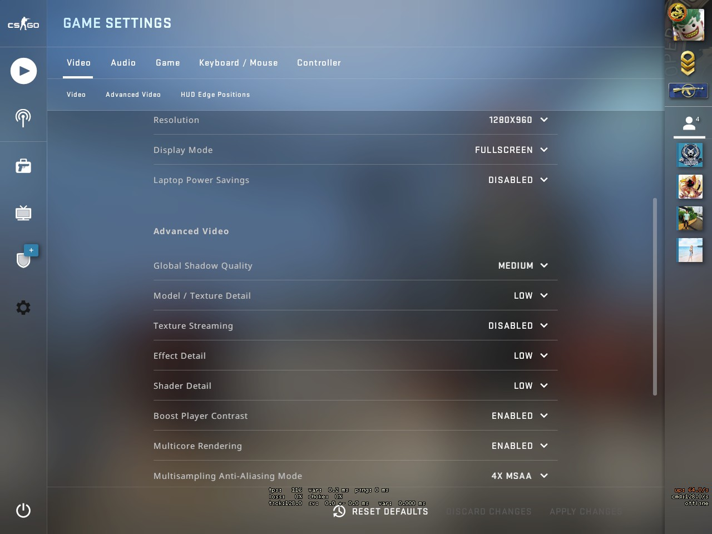

Video Resolution
CS Config
hud_showtargetid "0" hud_takesshots "0" joy_accelmax "1.0" joy_accelscale "0.6" joy_accelscalepoly "0.4" joy_advanced "0" joy_advaxisr "0" joy_advaxisu "0" joy_advaxisv "0" joy_advaxisx "0" joy_advaxisy "0" joy_advaxisz "0" joy_autoaimdampen "0" joy_autoAimDampenMethod "0" joy_autoaimdampenrange "0" joy_axisbutton_threshold "0.3" joy_cfg_preset "1" joy_circle_correct "1" joy_curvepoint_1 "0.001" joy_curvepoint_2 "0.4" joy_curvepoint_3 "0.75" joy_curvepoint_4 "1" joy_curvepoint_end "2" joy_diagonalpov "0" joy_display_input "0" joy_forwardsensitivity "-1" joy_forwardthreshold "0.15" joy_gamma "0.2" joy_inverty "0" joy_lowend "1" joy_lowend_linear "0.55" joy_lowmap "1" joy_movement_stick "0" joy_name "joystick" joy_no_accel_jump "0" joy_pitchsensitivity "-0.250000" joy_pitchthreshold "0.15" joy_response_look "0" joy_response_look_pitch "1" joy_response_move "1" joy_sensitive_step0 "0.1" joy_sensitive_step1 "0.4" joy_sensitive_step2 "0.90" joy_sidesensitivity "1" joy_sidethreshold "0.15" joy_wingmanwarrior_centerhack "0" joy_wingmanwarrior_turnhack "0" joy_yawsensitivity "-1" joy_yawthreshold "0.15" joystick "0" joystick_force_disabled "1" joystick_force_disabled_set_from_options "1" key_bind_version "5" lobby_default_privacy_bits2 "1" lockMoveControllerRet "0" lookspring "0" lookstrafe "0" m_customaccel "0" m_customaccel_exponent "1" m_customaccel_max "0" m_customaccel_scale "0.04" m_forward "1" m_mouseaccel1 "0" m_mouseaccel2 "0" m_mousespeed "0" m_pitch "0.022" m_rawinput "1" m_side "0.8" m_yaw "0.022" mapoverview_icon_scale "1.0" mat_monitorgamma "1.6" mat_monitorgamma_tv_enabled "0" mat_powersavingsmode "0" mat_queue_report "0" mat_spewalloc "0" mat_texture_list_content_path "" mc_accel_band_size "0.5" mc_dead_zone_radius "0.06" mc_max_pitchrate "100.0" mc_max_yawrate "230.0" mm_csgo_community_search_players_min "3" mm_dedicated_search_maxping "41.555275" mm_server_search_lan_ports "27015,27016,27017,27018,27019,27020" muzzleflash_light "0" name "ron✪ツ" net_allow_multicast "1" net_graph "1" net_graphheight "55" net_graphholdsvframerate "0" net_graphipc "0" net_graphmsecs "400" net_graphpos "1" net_graphproportionalfont "0" net_graphshowinterp "1" net_graphshowlatency "1" net_graphshowsvframerate "0" net_graphsolid "1" net_graphtext "1" net_maxroutable "1200" net_scale "5" net_steamcnx_allowrelay "1" npc_height_adjust "1" option_duck_method "0" option_speed_method "0" password "2046E6459B6FF71E1F4B91532F039E86E4EDEB56290973AD99AFF7A5993CBF12" play_distance "1" player_botdifflast_s "5.000000" player_competitive_maplist_2v2_8_0_E8907D2E "mg_de_vertigo,mg_de_inferno,mg_de_overpass,mg_de_cbble,mg_de_train,mg_de_shortnuke,mg_de_shortdust,mg_gd_rialto,mg_de_lake" player_competitive_maplist_8_8_0_1B1D6577 "mg_de_mirage,mg_de_inferno,mg_de_dust2,mg_de_cache" player_nevershow_communityservermessage "1" player_survival_list_8_0_7 "mg_dz_blacksite,mg_dz_sirocco,mg_dz_junglety" player_teamplayedlast "2" player_wargames_list2_8_0_604 "mg_skirmish_flyingscoutsman,mg_skirmish_armsrace,mg_skirmish_demolition" r_drawmodelstatsoverlaymax "1.5" r_drawmodelstatsoverlaymin "0.1" r_drawtracers_firstperson "0" r_eyegloss "0" r_eyemove "0" r_eyeshift_x "0" r_eyeshift_y "0" r_eyeshift_z "0" r_eyesize "0" r_player_visibility_mode "1" rate "196608.000000" safezonex "1.0" safezoney "1.0" sc_enable "1.0" sc_joystick_map "1" sc_pitch_sensitivity "1.0" sc_yaw_sensitivity "1.0" scene_showfaceto "0" scene_showlook "0" scene_showmoveto "0" scene_showunlock "0" sensitivity "1" sk_autoaim_mode "1" skill "1.000000" snd_deathcamera_volume "0.3" snd_duckerattacktime "0.5" snd_duckerreleasetime "2.5" snd_duckerthreshold "0.15" snd_ducking_off "1" snd_ducktovolume "0.55" snd_dzmusic_volume "0.2" snd_hrtf_distance_behind "100" snd_hrtf_voice_delay "0.1" snd_hwcompat "0" snd_mapobjective_volume "0" snd_menumusic_volume "0.000000" snd_mix_async "1" snd_mix_async_onetime_reset "1" snd_mixahead "0.05" snd_music_selection "1" snd_music_volume_onetime_reset_2 "1" snd_musicvolume_multiplier_inoverlay "0.000000" snd_mute_losefocus "1" snd_mute_mvp_music_live_players "0" snd_mvp_volume "1.0" snd_pitchquality "1" snd_roundend_volume "0" snd_roundstart_volume "0" snd_surround_speakers "-1" snd_tensecondwarning_volume "0.04" sound_device_override "{0.0.0.00000000}.{09d74fc0-df29-40b7-a34a-8f0157a31aff}" spec_replay_autostart "1" spec_show_xray "0" spec_usenumberkeys_nobinds "1" ss_splitmode "0" store_version "1" suitvolume "0" sv_forcepreload "1" sv_log_onefile "0" sv_logbans "0" sv_logecho "1" sv_logfile "1" sv_logflush "0" sv_logsdir "LOGS" sv_noclipaccelerate "5" sv_noclipspeed "5" sv_pvsskipanimation "1" sv_skyname "nukeblank" sv_specaccelerate "5" sv_specnoclip "1" sv_specspeed "3" sv_unlockedchapters "99" sv_voiceenable "0" test_convar "0" texture_budget_background_alpha "9999999" texture_budget_panel_bottom_of_history_fraction ".25" texture_budget_panel_height "0" texture_budget_panel_width "0" texture_budget_panel_x "0" texture_budget_panel_y "450" tr_best_course_time "0" tr_completed_training "0" triple_monitor_mode "0" tv_nochat "1" ui_inventorysettings_recently_acknowledged "" ui_mainmenu_bkgnd_movie1 "vertigo" ui_nearbylobbies_filter3 "competitive" ui_news_last_read_link "https://blog.counter-strike.net/index.php/2020/06/30428/" ui_playsettings_maps_listen_casual "random_classic" ui_playsettings_maps_listen_competitive "random_classic" ui_playsettings_maps_listen_deathmatch "random_classic" ui_playsettings_maps_listen_scrimcomp2v2 "mg_de_inferno" ui_playsettings_maps_listen_skirmish "mg_skirmish_flyingscoutsman" ui_playsettings_maps_official_casual "mg_dust247" ui_playsettings_maps_official_deathmatch "mg_dust247" ui_playsettings_maps_workshop "@workshop/243702660/aim_botz" ui_playsettings_mode_listen "casual" ui_playsettings_mode_official_v20 "competitive" ui_playsettings_survival_solo "0" ui_playsettings_warmup_map_name "de_mirage" ui_popup_weaponupdate_version "0" ui_setting_advertiseforhire_auto "1" ui_setting_advertiseforhire_auto_last "/competitive" ui_steam_overlay_notification_position "topleft" ui_vanitysetting_loadoutslot_ct "melee" ui_vanitysetting_loadoutslot_t "rifle1" ui_vanitysetting_team "t" vgui_message_dialog_modal "1" viewmodel_fov "60" viewmodel_offset_x "1" viewmodel_offset_y "1" viewmodel_offset_z "-1.500000" viewmodel_presetpos "1" viewmodel_recoil "1" voice_caster_enable "0" voice_caster_scale "1" voice_enable "1" voice_forcemicrecord "1" voice_mixer_boost "0" voice_mixer_mute "0" voice_mixer_volume "1" voice_modenable "1" voice_positional "0" voice_scale "1" voice_system_enable "1" voice_threshold "2000" volume ".2" vprof_graphheight "256" vprof_graphwidth "512" vprof_unaccounted_limit "0.3" vprof_verbose "1" vprof_warningmsec "10" weapon_accuracy_logging "0" xbox_autothrottle "1" xbox_throttlebias "100" xbox_throttlespoof "200" zoom_sensitivity_ratio_joystick "1.1" zoom_sensitivity_ratio_mouse "1.2"
Copy this on your config.cfg file
unbindall bind "0" "bind = 3; slam_updatecfg; echo Loaded: 30 Seconds To Mars - Kings And Queens" bind "1" "slot1" bind "2" "slot2" bind "3" "slot3" bind "4" "slot4" bind "5" "slot5" bind "9" "bind = 2; slam_updatecfg; echo Loaded: 30 Seconds to Mars - Beautiful Lie" bind "a" "+moveleft;r_cleardecals" bind "b" "buymenu" bind "c" "slot8" bind "d" "+moveright;r_cleardecals" bind "e" "+use" bind "f" "slot7" bind "g" "drop" bind "h" "+jumpthrow" bind "i" "show_loadout_toggle" bind "l" "r_cleardecals" bind "m" "teammenu" bind "n" "+jump; -attack; -jump" bind "o" "givecurrentammo" bind "p" "give weapon_hegrenade;give weapon_flashbang;give weapon_smokegrenade;give weapon_molotov;sv_infinite_ammo 1" bind "q" "lastinv" bind "r" "+reload" bind "s" "+back;r_cleardecals" bind "t" "slot10" bind "u" "messagemode2" bind "v" "+lookatweapon" bind "w" "+forward;r_cleardecals" bind "x" "slam_play" bind "y" "messagemode" bind "z" "radio" bind "KP_INS" "Buy ak47;buy m4a1" bind "KP_END" "BUY vest" bind "KP_DOWNARROW" "BUY vesthelm" bind "KP_PGDN" "BUY flashbang" bind "KP_LEFTARROW" "BUY hegrenade" bind "KP_5" "BUY smokegrenade" bind "KP_RIGHTARROW" "BUY defuser" bind "KP_HOME" "BUY molotov; BUY incgrenade" bind "KP_UPARROW" "BUY decoy" bind "KP_ENTER" "Buy p250" bind "`" "toggleconsole" bind "," "buyammo1" bind "." "buyammo2" bind "=" "11" bind "SPACE" "+jump" bind "TAB" "+showscores" bind "ESCAPE" "cancelselect" bind "DEL" "mute" bind "PAUSE" "pause" bind "SHIFT" "+speed" bind "ALT" "noclip" bind "CTRL" "+duck" bind "RCTRL" "+altbinds" bind "F1" "+spray_menu" bind "F2" "bind = 7; slam_updatecfg; echo Loaded: Deorro_and_Chris_Brown_-_Five_More_Hours" bind "F3" "bind = 8; slam_updatecfg; echo Loaded: Don't Dream It's Over - Miley Cyrus & Ariana Grande" bind "F4" "bind = 11; slam_updatecfg; echo Loaded: Locked_Away_Lyrics_-_Adam_Levine__R._City" bind "F5" "bind = 9; slam_updatecfg; echo Loaded: Drake_-_Hotline_Bling" bind "F6" "bind = 16; slam_updatecfg; echo Loaded: prodigal" bind "F7" "bind = 15; slam_updatecfg; echo Loaded: moymoy palaboy - lumayo ka man sa laklak" bind "F10" "quit prompt" bind "MOUSE1" "+attack" bind "MOUSE2" "+attack2" bind "MOUSE3" "player_ping" bind "MOUSE5" "+voicerecord" bind "MWHEELUP" "+jump" bind "MWHEELDOWN" "+jump" @panorama_debug_overlay_opacity "0.8" adsp_debug "0" ai_report_task_timings_on_limit "0" ai_think_limit_label "0" budget_averages_window "0" budget_background_alpha "0" budget_bargraph_background_alpha "128" budget_bargraph_range_ms "16.6666666667" budget_history_numsamplesvisible "0" budget_history_range_ms "5" budget_panel_bottom_of_history_fraction ".25" budget_panel_height "384" budget_panel_width "512" budget_panel_x "0" budget_panel_y "50" budget_peaks_window "0" budget_show_averages "0" budget_show_history "0" budget_show_peaks "0" bugreporter_uploadasync "0" bugreporter_username "" c_maxdistance "200" c_maxpitch "90" c_maxyaw "135" c_mindistance "30" c_minpitch "0" c_minyaw "-135" c_orthoheight "100" c_orthowidth "100" c_thirdpersonshoulder "FALSE" c_thirdpersonshoulderaimdist "120.0" c_thirdpersonshoulderdist "40.0" c_thirdpersonshoulderheight "5.0" c_thirdpersonshoulderoffset "20.0" cachedvalue_count_partybrowser "1592655121" cachedvalue_count_teammates "1592675359" cam_collision "1" cam_idealdelta "4.0" cam_idealdist "150" cam_idealdistright "0" cam_idealdistup "0" cam_ideallag "4.0" cam_idealpitch "0" cam_idealyaw "0" cam_snapto "0" cc_lang "" cc_linger_time "1.0" cc_predisplay_time "0.25" cc_subtitles "0" chet_debug_idle "0" cl_allowdownload "0" cl_allowupload "0" cl_autohelp "0" cl_autowepswitch "0" cl_bob_lower_amt "21" cl_bobamt_lat "0.33" cl_bobamt_vert "0.14" cl_bobcycle "0.98" cl_buywheel_nomousecentering "0" cl_buywheel_nonumberpurchasing "0" cl_chatfilter_version "1" cl_chatfilters "63" cl_clanid "0" cl_cmdrate "128" cl_color "0" cl_compass_enabled "1" cl_crosshair_drawoutline "0" cl_crosshair_dynamic_maxdist_splitratio "0.3" cl_crosshair_dynamic_splitalpha_innermod "1" cl_crosshair_dynamic_splitalpha_outermod "1" cl_crosshair_dynamic_splitdist "5" cl_crosshair_friendly_warning "1" cl_crosshair_outlinethickness "0.100000" cl_crosshair_sniper_show_normal_inaccuracy "0" cl_crosshair_sniper_width "0" cl_crosshair_t "0" cl_crosshairalpha "200" cl_crosshaircolor "4" cl_crosshaircolor_b "50" cl_crosshaircolor_g "250" cl_crosshaircolor_r "50" cl_crosshairdot "0" cl_crosshairgap "-1.790851" cl_crosshairgap_useweaponvalue "0" cl_crosshairsize "2.684016" cl_crosshairstyle "1" cl_crosshairthickness "1.240978" cl_crosshairusealpha "1" cl_debugrumble "0" cl_detail_avoid_force "0.4" cl_detail_avoid_radius "64" cl_detail_avoid_recover_speed "0.25" cl_detail_max_sway "5" cl_disablefreezecam "1" cl_disablehtmlmotd "1" cl_dm_buyrandomweapons "0" cl_downloadfilter "nosounds" cl_dz_playagain_auto_spectate "0" cl_embedded_stream_audio_volume "60" cl_embedded_stream_audio_volume_xmaster "1" cl_filtertext_enabled "1" cl_fixedcrosshairgap "-5.000000" cl_forcepreload "0" cl_freezecampanel_position_dynamic "1" cl_grass_mip_bias "-0.5" cl_hide_avatar_images "" cl_hud_background_alpha "0.237523" cl_hud_bomb_under_radar "1" cl_hud_color "1" cl_hud_healthammo_style "1" cl_hud_playercount_pos "0" cl_hud_playercount_showcount "1" cl_hud_radar_scale "1" cl_idealpitchscale "0.8" cl_inventory_saved_filter2 "all" cl_inventory_saved_sort2 "inv_sort_alpha" cl_invites_only_friends "0" cl_invites_only_mainmenu "0" cl_itemimages_dynamically_generated "2" cl_join_advertise "1" cl_minimal_rtt_shadows "1" cl_mouselook "1" cl_mute_all_but_friends_and_party "0" cl_mute_enemy_team "0" cl_obs_interp_enable "1" cl_observercrosshair "1" cl_player_ping_mute "0" cl_playerspray_auto_apply "1" cl_promoted_settings_acknowledged "1:1591940086496" cl_quickinventory_lastinv "1" cl_quickinventory_line_update_speed "65.0f" cl_radar_always_centered "1" cl_radar_icon_scale_min "0.6" cl_radar_rotate "1" cl_radar_scale "0.35" cl_radar_square_with_scoreboard "1" cl_radial_radio_tab "0" cl_radialmenu_deadzone_size "0.04" cl_righthand "1" cl_rumblescale "0" cl_sanitize_player_names "0" cl_scoreboard_mouse_enable_binding "+attack2" cl_scoreboard_survivors_always_on "0" cl_show_clan_in_death_notice "1" cl_show_observer_crosshair "1" cl_showhelp "0" cl_showloadout "0" cl_showpluginmessages2 "0" cl_sniper_delay_unscope "0" cl_spec_follow_grenade_key "0" cl_spec_mode "5" cl_tablet_mapmode "0" cl_teamid_overhead_mode "2" cl_teammate_colors_show "1" cl_thirdperson "0" cl_timeout "30" cl_updaterate "128" cl_use_opens_buy_menu "1" cl_versus_intro "1" cl_viewmodel_shift_left_amt "1.5" cl_viewmodel_shift_right_amt "0.75" closecaption "0" closeonbuy "0" commentary_firstrun "0" con_allownotify "1" con_enable "1" crosshair "1" dsp_enhance_stereo "0" engine_no_focus_sleep "50" force_audio_english "0" func_break_max_pieces "15" g15_update_msec "250" gameinstructor_enable "0" hud_scaling "0.950000"